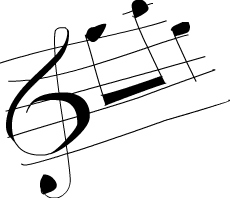

高阶函数
Table of Contents
1 高阶函数

Haskell中的函数可以接受函数作为参数也可以返回函数作为结果，这样的函数就被称作高阶函数。高阶函数可不只是某简单特性而已，它贯穿于Haskell的方方面面。要拒绝循环与状态的改变而通过定义问题"是什么"来解决问题，高阶函数必不可少。它们是编码的得力工具。
1.1 Curried functions
本质上，Haskell的所有函数都只有一个参数，那么我们先前编那么多含有多个参数的函数又是怎么回事? 呵，小伎俩! 所有多个参数的函数都是 Curried functions。 什么意思呢? 取一个例子最好理解，就拿我们的好朋友 max 函数说事吧。它看起来像是取两个参数，回传较大的那个数。 实际上，执行 max 4 5 时，它会首先回传一个取一个参数的函数，其回传值不是 4就是该参数，取决于谁大。 然后，以 5 为参数调用它，并取得最终结果。这听着挺绕口的，不过这一概念十分的酷! 如下的两个调用是等价的：
ghci> max 4 5 5 ghci> (max 4) 5 5

把空格放到两个东西之间，称作/函数调用/。它有点像个运算符，并拥有最高的优先级。看看 max 函数的型别: max :: (Ord a) = > a -> a -> a 。 也可以写作: max
:: (Ord a) \=> a -> (a -> a) 。 可以读作 max 取一个参数 a ，并回传一个函数(就是那个 -> )，这个函数取一个 a 型别的参数，回传一个a。 这便是为何只用箭头来分隔参数和回传值型别。
这样的好处又是如何? 简言之，我们若以不全的参数来调用某函数，就可以得到一个/不全调用/的函数。如果你高兴，构造新函数就可以如此便捷，将其传给另一个函数也是同样方便。
看下这个函数，简单至极:
multThree :: (Num a) => a -> a -> a -> a multThree x y z = x * y * z
我们若执行 mulThree 3 5 9 或 ((mulThree 3) 5) 9 ，它背后是如何运作呢？ 首先，按照空格分隔，把 3 交给 mulThree 。 这回传一个回传函数的函数。 然后把
5 交给它，回传一个取一个参数并使之乘以 15 的函数。 最后把 9 交给这一函数，回传 135 。 想想，这个函数的型别也可以写作 multThree :: (Num a) = > a
-> (a -> (a -> a)) ，=->= 前面的东西就是函数取的参数，后面的东西就是其回传值。所以说，我们的函数取一个 a ，并回传一个型别为 (Num a) \=> a -> (a -> a)
的函数，类似，这一函数回传一个取一个 a ，回传一个型别为 (Num a) \=> a ->
a 的函数。 而最后的这个函数就只取一个 a 并回传一个 a ，如下:
ghci> let multTwoWithNine = multThree 9 ghci> multTwoWithNine 2 3 54 ghci> let multWithEighteen = multTwoWithNine 2 ghci> multWithEighteen 10 180
前面提到，以不全的参数调用函数可以方便地创造新的函数。例如，搞个取一数与100 比较大小的函数该如何? 大可这样:
compareWithHundred :: (Num a, Ord a) => a -> Ordering compareWithHundred x = compare 100 x
用 99 调用它，就可以得到一个 GT 。 简单。 注意下在等号两边都有 x 。想想
compare 100 会回传什么？一个取一数与 100 比较的函数。Wow，这不正是我们想要的? 这样重写:
compareWithHundred :: (Num a, Ord a) => a -> Ordering compareWithHundred = compare 100
型别声明依然相同，因为 compare 100 回传函数。 compare 的型别为 (Ord a) =
> a -> (a -> Ordering) =，用 100 调用它后回传的函数型别为 (Num a, Ord a) >
a -> Ordering ，同时由于 100 还是 Num 型别类的实例，所以还得另留一个类约束。
Yo! 你得保证已经弄明白了 Curried functions与不全调用的原理，它们很重要！
中缀函数也可以不全调用，用括号把它和一边的参数括在一起就行了。这回传一个取一参数并将其补到缺少的那一端的函数。 一个简单函数如下:
divideByTen :: (Floating a) => a -> a divideByTen = (/10)
调用 divideByTen 200 就是 (/10) 200 ，和 200 / 10 等价。
一个检查字符是否为大写的函数:
isUpperAlphanum :: Char -> Bool isUpperAlphanum = (`elem` ['A'..'Z'])
唯一的例外就是 - 运算符，按照前面提到的定义， (-4) 理应回传一个并将参数减
4 的函数，而实际上，处于计算上的方便， (-4) 表示负 4 。 若你一定要弄个将参数减 4 的函数，就用 subtract 好了，像这样 (subtract 4) .
若不用 let 给它命名或传到另一函数中，在 ghci 中直接执行 multThree 3 4 会怎样?
ghci> multThree 3 4 :1:0: No instance for (Show (t -> t)) arising from a use of `print' at :1:0-12 Possible fix: add an instance declaration for (Show (t -> t)) In the expression: print it In a 'do' expression: print it
ghci 说，这一表达式回传了一个 a -> a 型别的函数，但它不知道该如何显示它。函数不是 Show 型别类的实例，所以我们不能得到表示一函数内容的字串。 若在
ghci 中计算 1+1 ，它会首先计算得 2 ，然后调用 show 2 得到该数值的字串表示，即="2"= ，再输出到屏幕.
1.2 是时候了，来点高阶函数！
Haskell 中的函数可以取另一个函数做参数，也可以回传函数。举个例子，我们弄个取一个函数并调用它两次的函数.
applyTwice :: (a -> a) -> a -> a applyTwice f x = f (f x)

首先注意这型别声明。 在此之前我们很少用到括号，因为 (->) 是自然的右结合，不过在这里括号是必须的。它标明了首个参数是个参数与回传值型别都是a的函数，第二个参数与回传值的型别也都是a。我们可以用 Curried functions的思路来理解这一函数，不过免得自寻烦恼，我们姑且直接把它看作是取两个参数回传一个值，其首个参数是个型别为 (a->a) 的函数,第二个参数是个 a 。 该函数的型别可以是 (Int->Int)
，也可以是 (String->String) ，但第二个参数必须与之一致。
*Note*: 现在开始我们会直说某函数含有多个参数(除非它真的只有一个参数)。 以简洁之名，我们会说 ``(a->a->a)`` 取两个参数，尽管我们知道它在背后做的手脚.
这个函数是相当的简单，就拿参数 f 当函数，用 x 调用它得到的结果再去调用它。也就可以这样玩:
ghci> applyTwice (+3) 10 16 ghci> applyTwice (++ " HAHA") "HEY" "HEY HAHA HAHA" ghci> applyTwice ("HAHA " ++) "HEY" "HAHA HAHA HEY" ghci> applyTwice (multThree 2 2) 9 144 ghci> applyTwice (3:) [1] [3,3,1]
看，不全调用多神奇! 如果有个函数要我们给它传个一元函数，大可以不全调用一个函数让它剩一个参数，再把它交出去。
接下来我们用高阶函数的编程思想来实现个标准库中的函数，它就是 zipWith 。它取一个函数和两个 List 做参数，并把两个 List交到一起(使相应的元素去调用该函数)。如下就是我们的实现:
zipWith' :: (a -> b -> c) -> [a] -> [b] -> [c] zipWith' _ [] _ = [] zipWith' _ _ [] = [] zipWith' f (x:xs) (y:ys) = f x y : zipWith' f xs ys
看下这个型别声明，它的首个参数是个函数，取两个参数处理交叉，其型别不必相同，不过相同也没关系。第二三个参数都是 List，回传值也是个 List。 第一个List中元素的型别必须是a，因为这个处理交叉的函数的第一个参数是a。 第二个List 中元素的型别必为 b ，因为这个处理交叉的函数第二个参数的型别是 b 。 回传的 List 中元素型别为 c 。 如果一个函数说取一个型别为 a->b->c 的函数做参数，传给它个
a->a->c 型别的也是可以的，但反过来就不行了。可以记下，若在使用高阶函数的时候不清楚其型别为何，就先忽略掉它的型别声明，再到ghci 下用 :t 命令来看下
Haskell 的型别推导.
这函数的行为与普通的 zip 很相似，边界条件也是相同，只不过多了个参数，即处理元素交叉的函数。它关不着边界条件什么事儿，所以我们就只留一个 _ 。后一个模式的函数体与 zip 也很像，只不过这里是 f x y 而非 (x,y) 。 只要足够通用，一个简单的高阶函数可以在不同的场合反复使用。如下便是我们 zipWith' 函数本领的冰山一角:
ghci> zipWith' (+) [4,2,5,6] [2,6,2,3] [6,8,7,9] ghci> zipWith' max [6,3,2,1] [7,3,1,5] [7,3,2,5] ghci> zipWith' (++) ["foo "，"bar "，"baz "] ["fighters"，"hoppers"，"aldrin"] ["foo fighters","bar hoppers","baz aldrin"] ghci> zipWith' (*) (replicate 5 2) [1..] [2,4,6,8,10] ghci> zipWith' (zipWith' (*)) [[1,2,3],[3,5,6],[2,3,4]] [[3,2,2],[3,4,5],[5,4,3]] [[3,4,6],[9,20,30],[10,12,12]]
如你所见，一个简单的高阶函数就可以玩出很多花样。命令式语言使用 for 、
while 、赋值、状态检测来实现功能，再包起来留个接口，使之像个函数一样调用。而函数式语言使用高阶函数来抽象出常见的模式，像成对遍历并处理两个List 或从中筛掉自己不需要的结果。
接下来实现标准库中的另一个函数 flip ， flip 简单地取一个函数作参数并回传一个相似的函数，只是它们的两个参数倒了个。
flip' :: (a -> b -> c) -> (b -> a -> c) flip' f = g where g x y = f y x
从这型别声明中可以看出，它取一个函数，其参数型别分别为 a 和 b ，而它回传的函数的参数型别为 b 和 a 。由于函数缺省都是柯里化的， -> 为右结合，这里的第二对括号其实并无必要， (a -> b -> c) -> (b -> a -> c) 与 (a -> b ->
c) -> (b -> (a -> c)) 等价,也与 (a -> b -> c) -> b -> a -> c 等价。 前面我们写了 g x y = f y x ，既然这样可行，那么 f y x = g x y 不也一样? 这一来我们可以改成更简单的写法:
flip' :: (a -> b -> c) -> b -> a -> c flip' f y x = f x y
在这里我们就利用了 Curried functions 的优势，只要调用 flip' f 而不带 y 和
x ，它就会回传一个俩参数倒个的函数。 flip 处理的函数往往都是用来传给其他函数调用，于是我们可以发挥 Curried functions 的优势，预先想好发生完全调用的情景并处理好回传值.
ghci> flip' zip [1,2,3,4,5] "hello" [('h',1),('e',2),('l',3),('l',4),('o',5)] ghci> zipWith (flip' div) [2,2..] [10,8,6,4,2] [5,4,3,2,1]
1.3 map 与 filter
map 取一个函数和 List 做参数，遍历该 List的每个元素来调用该函数产生一个新的 List。 看下它的型别声明和实现:
map :: (a -> b) -> [a] -> [b] map _ [] = [] map f (x:xs) = f x : map f xs
从这型别声明中可以看出，它取一个取 a 回传 b 的函数和一组 a 的List，并回传一组 b 。 这就是 Haskell的有趣之处：有时只看型别声明就能对函数的行为猜个大致。 map 函数多才多艺，有一百万种用法。如下是其中一小部分:
ghci> map (+3) [1,5,3,1,6] [4,8,6,4,9] ghci> map (++ "!") ["BIFF"，"BANG"，"POW"] ["BIFF!","BANG!","POW!"] ghci> map (replicate 3) [3..6] [[3,3,3],[4,4,4],[5,5,5],[6,6,6]] ghci> map (map (^2)) [[1,2],[3,4,5,6],[7,8]] [[1,4],[9,16,25,36],[49,64]] ghci> map fst [(1,2),(3,5),(6,3),(2,6),(2,5)] [1,3,6,2,2]
你可能会发现，以上的所有代码都可以用 List Comprehension来替代。 map (+3)
[1,5,3,1,6] 与 [x+3 | x <- [1,5,3,1,6] 完全等价。
filter 函数取一个限制条件和一个 List，回传该 List中所有符合该条件的元素。它的型别声明及实现大致如下:
filter :: (a -> Bool) -> [a] -> [a] filter _ [] = [] filter p (x:xs) | p x = x : filter p xs | otherwise = filter p xs
很简单。只要 p x 所得的结果为真，就将这一元素加入新List，否则就无视之。几个使用范例:
ghci> filter (>3) [1,5,3,2,1,6,4,3,2,1] [5,6,4] ghci> filter (==3) [1,2,3,4,5] [3] ghci> filter even [1..10] [2,4,6,8,10] ghci> let notNull x = not (null x) in filter notNull [[1,2,3],[],[3,4,5],[2,2],[],[],[]] [[1,2,3],[3,4,5],[2,2]] ghci> filter (`elem` ['a'..'z']) "u LaUgH aT mE BeCaUsE I aM diFfeRent" "uagameasadifeent" ghci> filter (`elem` ['A'..'Z']) "i lauGh At You BecAuse u r aLL the Same" "GAYBALLS"
同样，以上都可以用 List Comprehension的限制条件来实现。并没有教条规定你必须在什么情况下用 map 和 filter 还是 List Comprehension，选择权归你，看谁舒服用谁就是。如果有多个限制条件，只能连着套好几个 filter 或用 && 等逻辑函数的组合之，这时就不如 List comprehension 来得爽了。
还记得上一章的那个 quicksort 函数么? 我们用到了 List Comprehension来过滤大于或小于锚的元素。 换做 filter 也可以实现，而且更加易读：
quicksort :: (Ord a) => [a] -> [a] quicksort [] = [] quicksort (x:xs) = let smallerSorted = quicksort (filter (<=x) xs) biggerSorted = quicksort (filter (>x) xs) in smallerSorted ++ [x] ++ biggerSorted

map 和 filter 是每个函数式进程员的面包黄油(呃， map 和 filter 还是
List Comprehension 并不重要)。想想前面我们如何解决给定周长寻找合适直角三角形的问题的? 在命令式编程中，我们可以套上三个循环逐个测试当前的组合是否满足条件，若满足，就打印到屏幕或其他类似的输出。而在函数式编程中，这行就都交给 map 和
filter 。你弄个取一参数的函数，把它交给 map 过一遍 List，再 filter 之找到合适的结果。 感谢 Haskell 的惰性，即便是你多次 map 一个 ` List 也只会遍历一遍该 List，要找出小于 100000 的数中最大的 3829的倍数，只需过滤结果所在的
List 就行了.
要找出/小于 100000 的 3829 的所有倍数/，我们应当过滤一个已知结果所在的List.
largestDivisible :: (Integral a) => a largestDivisible = head (filter p [100000,99999..]) where p x = x `mod` 3829 == 0
首先，取一个降序的小于 100000 所有数的 List，然后按照限制条件过滤它。由于这个 List 是降序的，所以结果 List中的首个元素就是最大的那个数。惰性再次行动! 由于我们只取这结果 List的首个元素，所以它并不关心这 List是有限还是无限的，在找到首个合适的结果处运算就停止了。
接下来，我们就要/找出所有小于 10000 且为奇的平方的和/，得先提下*takeWhile* 函数，它取一个限制条件和 List 作参数，然后从头开始遍历这一List，并回传符合限制条件的元素。而一旦遇到不符合条件的元素，它就停止了。 如果我们要取出字串
="elephants know how to party"= 中的首个单词，可以 takeWhile (/= ' ')
"elephants know how to party" ，回传 ="elephants"= 。okay，要求所有小于
10000的奇数的平方的和，首先就用 (^2) 函数 map 掉这个无限的 List [1..]
。然后过滤之，只取奇数就是了。 在大于 10000处将它断开，最后前面的所有元素加到一起。 这一切连写函数都不用，在 ghci下直接搞定.
ghci> sum (takeWhile (<10000) (filter odd (map (^2) [1..]))) 166650
不错! 先从几个初始数据(表示所有自然数的无限 List)，再 map 它， filter 它，切它，直到它符合我们的要求，再将其加起来。 这用 List comprehension也是可以的，而哪种方式就全看你的个人口味.
ghci> sum (takeWhile (<10000) [m | m <- [n^2 | n <- [1..]], odd m]) 166650
感谢 Haskell 的惰性特质，这一切才得以实现。 我们之所以可以 map 或 filter
一个无限List，是因为它的操作不会被立即执行，而是拖延一下。只有我们要求
Haskell交给我们 sum 的结果的时候， sum 函数才会跟 takeWhile 说，它要这些数。 takeWhile 就再去要求 filter 和 map 行动起来，并在遇到大于等于
10000 时候停止. 下个问题与 Collatz串行有关，取一个自然数，若为偶数就除以 2。若为奇数就乘以 3 再加 1。再用相同的方式处理所得的结果，得到一组数字构成的的链。它有个性质，无论任何以任何数字开始，最终的结果都会归1。所以若拿 13 当作起始数，就可以得到这样一个串行 13，40，20，10，5，16，8，4，2，1 。 13*3+1 得 40，
40 除 2 得20，如是继续，得到一个 10 个元素的链。
好的，我们想知道的是: 以 1 到 100之间的所有数作为起始数，会有多少个链的长度大于 15?
chain :: (Integral a) => a -> [a] chain 1 = [1] chain n | even n = n:chain (n `div` 2) | odd n = n:chain (n*3 + 1)
该链止于 1，这便是边界条件。标准的递归函数:
ghci> chain 10 [10,5,16,8,4,2,1] ghci> chain 1 [1] ghci> chain 30 [30,15,46,23,70,35,106,53,160,80,40,20,10,5,16,8,4,2,1]
yay! 貌似工作良好。 现在由这个函数来告诉我们结果:
numLongChains :: Int numLongChains = length (filter isLong (map chain [1..100])) where isLong xs = length xs > 15
我们把 chain 函数 map 到 =[1..100]=，得到一组链的
List，然后用个限制条件过滤长度大于 15
的链。过滤完毕后就可以得出结果list中的元素个数.
*Note*: 这函数的型别为 ``numLongChains :: Int``。这是由于历史原因，``length`` 回传一个 ``Int`` 而非 ``Num`` 的成员型别，若要得到一个更通用的 ``Num a``，我们可以使用 ``fromIntegral`` 函数来处理所得结果.
用 map ，我们可以写出类似 map (*) [0..] 之类的代码。 如果只是为了例证
Curried functions和不全调用的函数是真正的值及其原理，那就是你可以把函数传递或把函数装在List 中(只是你还不能将它们转换为字串)。 迄今为止，我们还只是 map
单参数的函数到 List，如 map (*2) [0..] 可得一组型别为 (Num a) \=> [a] 的
List，而 map (*) [0..] 也是完全没问题的。 * 的型别为 (Num a) \=> a -> a
-> a ，用单个参数调用二元函数会回传一个一元函数。如果用 * 来 map 一个
[0..] 的 List，就会得到一组一元函数组成的 List，即 (Num a) \=> [a->a] 。
map (*) [0..] 所得的结果写起来大约就是 [(0*),(1*),(2*)..].
ghci> let listOfFuns = map (*) [0..] ghci> (listOfFuns !! 4) 5 20
取所得 List 的第五个元素可得一函数，与 (*4) 等价。 然后用 5 调用它，与
(* 4) 5 或 4*5 都是等价的.
1.4 lambda

lambda就是匿名函数。有些时候我们需要传给高阶函数一个函数，而这函数我们只会用这一次，这就弄个特定功能的lambda。编写 lambda，就写个 \ (因为它看起来像是希腊字母的 lambda –如果你斜视的厉害)，后面是用空格分隔的参数， -> 后面就是函数体。通常我们都是用括号将其括起，要不然它就会占据整个右边部分。
向上 5 英吋左右，你会看到我们在 numLongChain 函数中用 where 语句声明了个
isLong 函数传递给了 filter 。好的，用 lambda 代替它。
numLongChains :: Int numLongChains = length (filter (\xs -> length xs > 15) (map chain [1..100]))

lambda 是个表达式，因此我们可以任意传递。表达式 (\xs -> length xs > 15) 回传一个函数，它可以告诉我们一个 List的长度是否大于 15。
不熟悉 Curried functions 与不全调用的人们往往会写出很多lambda，而实际上大部分都是没必要的。例如，表达式 map (+3) [1,6,3,2] 与 map (\x -> x+3)
[1,6,3,2] 等价， (+3) 和 (\x -> x+3) 都是给一个数加上 3。不用说，在这种情况下不用 lambda 要清爽的多。
和普通函数一样，lambda 也可以取多个参数。
ghci> zipWith (\a b -> (a * 30 + 3) / b) [5,4,3,2,1] [1,2,3,4,5] [153.0,61.5,31.0,15.75,6.6]
同普通函数一样，你也可以在 lambda中使用模式匹配，只是你无法为一个参数设置多个模式，如 [] 和 (x:xs) 。lambda 的模式匹配若失败，就会引发一个运行时错误，所以慎用！
ghci> map (\(a,b) -> a + b) [(1,2),(3,5),(6,3),(2,6),(2,5)] [3,8,9,8,7]
一般情况下，lambda 都是括在括号中，除非我们想要后面的整个语句都作为lambda 的函数体。很有趣，由于有柯里化，如下的两段是等价的：
addThree :: (Num a) => a -> a -> a -> a addThree x y z = x + y + z
addThree :: (Num a) => a -> a -> a -> a addThree = \x -> \y -> \z -> x + y + z
这样的函数声明与函数体中都有 -> ，这一来型别声明的写法就很明白了。当然第一段代码更易读，不过第二个函数使得柯里化更容易理解。
有些时候用这种语句写还是挺酷的，我觉得这应该是最易读的 flip 函数实现了：
flip' :: (a -> b -> c) -> b -> a -> c flip' f = \x y -> f y x
尽管这与 flip' f x y = f y x 等价，但它可以更明白地表示出它会产生一个新的函数。 flip 常用来处理一个函数，再将回传的新函数传递给 map 或 filter 。所以如此使用 lambda可以更明确地表现出回传值是个函数，可以用来传递给其他函数作参数。
1.5 关键字 fold

回到当初我们学习递归的情景。我们会发现处理 List的许多函数都有固定的模式，通常我们会将边界条件设置为空 List，再引入 (x:xs) 模式，对单个元素和余下的 List
做些事情。这一模式是如此常见，因此 Haskell引入了一组函数来使之简化，也就是
fold 。它们与map有点像，只是它们回传的是单个值。
一个 fold 取一个二元函数，一个初始值(我喜欢管它叫累加值)和一个需要折叠的
List。这个二元函数有两个参数，即累加值和 List的首项(或尾项)，回传值是新的累加值。然后，以新的累加值和新的 List首项调用该函数，如是继续。到 List遍历完毕时，只剩下一个累加值，也就是最终的结果。
首先看下 foldl 函数，也叫做左折叠。它从 List的左端开始折叠，用初始值和 List 的头部调用这二元函数，得一新的累加值，并用新的累加值与 List的下一个元素调用二元函数。如是继续。
我们再实现下 sum ，这次用 fold 替代那复杂的递归：
sum' :: (Num a) => [a] -> a sum' xs = foldl (\acc x -> acc + x) 0 xs
测试下，一二三～
ghci> sum' [3,5,2,1] 11

我们深入看下 fold 的执行过程： \acc x-> acc + x 是个二元函数， 0 是初始值，=xs= 是待折叠的 List。一开始，累加值为 0 ，当前项为 3 ，调用二元函数
0+3 得 3 ，作新的累加值。接着来，累加值为 3 ，当前项为 5 ，得新累加值 8 。再往后，累加值为 8 ，当前项为 2 ，得新累加值 10 。最后累加值为 10 ，当前项为 1 ，得 11 。恭喜，你完成了一次折叠 (fold) ！
左边的这个图表示了折叠的执行过程，一步又一步(一天又一天!)。浅棕色的数字都是累加值，你可以从中看出List是如何从左端一点点加到累加值上的。唔对对对！如果我们考虑到函数的柯里化，可以写出更简单的实现：
sum' :: (Num a) => [a] -> a sum' = foldl (+) 0
这个 lambda 函数 (\acc x -> acc + x ) 与 (\+) 等价。我们可以把 xs 等一应参数省略掉，反正调用 foldl (+) 0 会回传一个取 List作参数的函数。通常，如果你的函数类似 foo a = bar b a ， 大可改为 foo = bar b 。有柯里化嘛。
呼呼，进入右折叠前我们再实现个用到左折叠的函数。大家肯定都知道 elem 是检查某元素是否属于某 List的函数吧，我就不再提了(唔，刚提了)。用左折叠实现它:
elem' :: (Eq a) => a -> [a] -> Bool elem' y ys = foldl (\acc x -> if x == y then True else acc) False ys
好好好，这里我们有什么？起始值与累加值都是布尔值。在处理 fold 时，累加值与最终结果的型别总是相同的。如果你不知道怎样对待起始值，那我告诉你，我们先假设它不存在，以 False 开始。我们要是 fold 一个空 List，结果就是 False 。然后我们检查当前元素是否为我们寻找的，如果是，就令累加值为 True ，如果否，就保留原值不变。若 False ，及表明当前元素不是。若 True ，就表明已经找到了。
右折叠 foldr 的行为与左折叠相似，只是累加值是从 List的右边开始。同样，左折叠的二元函数取累加值作首个参数，当前值为第二个参数(即 \acc x -> ... )，而右折叠的二元函数参数的顺序正好相反(即 \x acc -> ... )。这倒也正常，毕竟是从右端开始折叠。
累加值可以是任何型别，可以是数值，布尔值，甚至一个新的List。我们可以用右
fold 实现 map 函数，累加值就是个 List。将 map 处理过的元素一个一个连到一起。很容易想到，起始值就是空 List。
map' :: (a -> b) -> [a] -> [b] map' f xs = foldr (\x acc -> f x : acc) [] xs
如果我们用 (+3) 来映射 [1,2,3] ，它就会先到达 List的右端，我们取最后那个元素，也就是 3 来调用 (+3) ，得 6 。追加 (:) 到累加值上， 6:[] 得
[6] 并成为新的累加值。用 2 调用 (+3) ，得 5 ，追加到累加值，于是累加值成了 [5,6] 。再对 1 调用 (+3) ，并将结果 4 追加到累加值，最终得结果
[4,5,6] 。
当然，我们也完全可以用左折叠来实现它， map' f xs = foldl (\acc x -> acc \++
[f x]) [] xs 就行了。不过问题是，使用 (++) 往 List 后面追加元素的效率要比使用 (:) 低得多。所以在生成新 List 的时候人们一般都是使用右折叠。

反转一个List，既也可以通过右折叠，也可以通过左折叠。有时甚至不需要管它们的分别，如 sum 函数的左右折叠实现都是十分相似。不过有个大的不同，那就是右折叠可以处理无限长度的数据结构，而左折叠不可以。将无限List 从中断开执行左折叠是可以的，不过若是向右，就永远到不了头了。
/所有遍历 List 中元素并据此回传一个值的操作都可以交给 fold 实现/。无论何时需要遍历 List 并回传某值，都可以尝试下 fold 。因此， fold 的地位可以说与
map 和 filter 并驾齐驱，同为函数式编程中最常用的函数之一。
foldl1 与 foldr1 的行为与 foldl 和 =foldr=相似，只是你无需明确提供初始值。他们假定 List的首个(或末尾)元素作为起始值，并从旁边的元素开始折叠。这一来，
sum 函数大可这样实现： sum = foldl1 (+) 。这里待折叠的 List中至少要有一个元素，若使用空 List 就会产生一个运行时错误。不过 foldl 和 foldr 与空 List
相处的就很好。所以在使用 fold 前，应该先想下它会不会遇到空 List，如果不会遇到，大可放心使用 foldr1 和 foldl1 。
为了体会 fold 的威力，我们就用它实现几个库函数：
maximum' :: (Ord a) => [a] -> a maximum' = foldr1 (\x acc -> if x > acc then x else acc) reverse' :: [a] -> [a] reverse' = foldl (\acc x -> x : acc) [] product' :: (Num a) => [a] -> a product' = foldr1 (*) filter' :: (a -> Bool) -> [a] -> [a] filter' p = foldr (\x acc -> if p x then x : acc else acc) [] head' :: [a] -> a head' = foldr1 (\x _ -> x) last' :: [a] -> a last' = foldl1 (\_ x -> x)
仅靠模式匹配就可以实现 head 函数和 last 函数，而且效率也很高。这里只是为了演示，用 fold 的实现方法。我觉得我们这个 reverse' 定义的相当聪明，用一个空 List做初始值，并向左展开 List，从左追加到累加值，最后得到一个反转的新
List。 \acc x -> x : acc 有点像 : 函数，只是参数顺序相反。所以我们可以改成
foldl (flip (:)) [] 。
有个理解折叠的思路：假设我们有个二元函数 f ，起始值 z ，如果从右折叠
[3,4,5,6] ，实际上执行的就是 f 3 (f 4 (f 5 (f 6 z))) 。 f 会被 List的尾项和累加值调用，所得的结果会作为新的累加值传入下一个调用。假设 f 是
(\+) ，起始值 z 是 0 ，那么就是 3 + (4 + (5 + (6 + 0))) ，或等价的首码形式： (\+) 3 ((\+) 4 ((\+) 5 ((+) 6 0))) 。相似，左折叠一个List，以 g 为二元函数， z 为累加值，它就与 g (g (g (g z 3) 4) 5) 6 等价。如果用 flip
(:) 作二元函数，=[]= 为累加值(看得出，我们是要反转一个 List)，这就与 flip
(:) (flip (:) (flip (:) (flip (:) [] 3) 4) 5) 6 等价。显而易见，执行该表达式的结果为 [6,5,4,3] 。
scanl 和 scanr 与 foldl 和 foldr 相似，只是它们会记录下累加值的所有状态到一个 List。也有 scanl1 和*scanr1*。
ghci> scanl (+) 0 [3,5,2,1] [0,3,8,10,11] ghci> scanr (+) 0 [3,5,2,1] [11,8,3,1,0] ghci> scanl1 (\acc x -> if x > acc then x else acc) [3,4,5,3,7,9,2,1] [3,4,5,5,7,9,9,9] ghci> scanl (flip (:)) [] [3,2,1] [[],[3],[2,3],[1,2,3]]
当使用 scanl 时，最终结果就是 List 的最后一个元素。而在 scanr
中则是第一个。
sqrtSums :: Int sqrtSums = length (takeWhile (<1000) (scanl1 (+) (map sqrt [1..]))) + 1
ghci> sqrtSums 131 ghci> sum (map sqrt [1..131]) 1005.0942035344083 ghci> sum (map sqrt [1..130]) 993.6486803921487
scan 可以用来跟踪 fold 函数的执行过程。想想这个问题，/取所有自然数的平方根的和，寻找在何处超过1000/？ 先 map sqrt [1..] ，然后用个 fold 来求它们的和。但在这里我们想知道求和的过程，所以使用 scan ， scan 完毕时就可以得到小于 1000 的所有和。所得结果 List 的第一个元素为1，第二个就是 1+根2，第三个就是 1+根2+根3。若有 x 个和小于1000，那结果就是 x+1 。
1.6 有$的函数调用
好的，接下来看看 $ 函数。它也叫作/函数调用符/。先看下它的定义：
($) :: (a -> b) -> a -> b f $ x = f x
什么鬼东西？这没啥意义的操作符？它只是个函数调用符罢了？好吧，不全是，但差不多。普通的函数调用符有最高的优先级，而 $ 的优先级则最低。用空格的函数调用符是左结合的，如 f a b c 与 ((f a) b) c 等价，而 $ 则是右结合的。
听着不错。但有什么用？它可以减少我们代码中括号的数目。试想有这个表达式： sum
(map sqrt [1..130]) 。由于低优先级的 $ ，我们可以将其改为 sum $ map sqrt
[1..130] ，可以省敲不少键！ sqrt 3 + 4 + 9 会怎样？这会得到 9，4 和根3 的和。若要取 (3+4+9) 的平方根，就得 sqrt (3+4+9) 或用 $ ： sqrt $ 3+4+9
。因为 $ 有最低的优先级，所以你可以把$看作是在右面写一对括号的等价形式。
sum (filter (> 10) (map (*2) [2..10])) 该如何？嗯， $ 是右结合， f (g
(z x)) 与 f $ g $ z x 等价。所以我么可以将 sum (filter (> 10) (map (*2)
[2..10]) 重写为 sum $ filter (> 10) $ map (*2) [2..10] 。
除了减少括号外，=$= 还可以将数据作为函数使用。例如映射一个函数调用符到一组函数组成的 List：
ghci> map ($ 3) [(4+),(10*),(^2),sqrt] [7.0,30.0,9.0,1.7320508075688772]
1.7 Function composition
在数学中，函数组合是这样定义的： ，表示组合两个函数成为一个函数。以
，表示组合两个函数成为一个函数。以 x 调用这一函数，就与用 x 调用 g 再用所得的结果调用 f
等价。
Haskell 中的函数组合与之很像，即 . 函数。其定义为：
(.) :: (b -> c) -> (a -> b) -> a -> c f . g = \x -> f (g x)

注意下这型别声明， f 的参数型别必须与 g 的回传型别相同。所以得到的组合函数的参数型别与 g 相同，回传型别与 f 相同。表达式 negate . (*3) 回传一个求一数字乘以 3 后的负数的函数。
函数组合的用处之一就是生成新函数，并传递给其它函数。当然我们可以用lambda实现，但大多数情况下，使用函数组合无疑更清楚。假设我们有一组由数字组成的List，要将其全部转为负数，很容易就想到应先取其绝对值，再取负数，像这样：
ghci> map (\x -> negate (abs x)) [5,-3,-6,7,-3,2,-19,24] [-5,-3,-6,-7,-3,-2,-19,-24]
注意下这个 lambda与那函数组合是多么的相像。用函数组合，我们可以将代码改为：
ghci> map (negate . abs) [5,-3,-6,7,-3,2,-19,24] [-5,-3,-6,-7,-3,-2,-19,-24]
漂亮！函数组合是右结合的，我们同时组合多个函数。表达式 f (g (z x)) 与 (f .
g . z) x 等价。按照这个思路，我们可以将
ghci> map (\xs -> negate (sum (tail xs))) [[1..5],[3..6],[1..7]] [-14,-15,-27]
改为：
ghci> map (negate . sum . tail) [[1..5],[3..6],[1..7]] [-14,-15,-27]
不过含多个参数的函数该怎么办？好，我们可以使用不全调用使每个函数都只剩下一个参数。 sum (replicate 5 (max 6.7 8.9)) 可以重写为 (sum . replicate 5 . max
6.7) 8.9 或 sum . replicate 5 . max 6.7 $ 8.9 。在这里会产生一个函数，它取与=max 6.7= 同样的参数，并使用结果调用 replicate 5 再用 sum 求和。最后用
8.9 调用该函数。不过一般你可以这么读，用 8.9 调用 max 6.7 ，然后使它
replicate 5 ，再 sum 之。如果你打算用函数组合来替掉那堆括号，可以先在最靠近参数的函数后面加一个 $ ，接着就用 . 组合其所有函数调用，而不用管最后那个参数。如果有这样一段代码： replicate 100 (product (map (*3) (zipWith max
[1,2,3,4,5] [4,5,6,7,8]))) ，可以改为： replicate 100 . product . map (*3)
. zipWith max [1,2,3,4,5] $ [4,5,6,7,8] 。如果表达式以3 个括号结尾，就表示你可以将其修改为函数组合的形式。
函数组合的另一用途就是定义 point free style (也称作 pointless style)的函数。就拿我们之前写的函数作例子：
sum' :: (Num a) => [a] -> a sum' xs = foldl (+) 0 xs
等号的两端都有个 xs 。由于有柯里化 (Currying)，我们可以省掉两端的 xs 。
foldl (\+) 0 回传的就是一个取一 List 作参数的函数，我们把它修改为 sum' =
foldl (+) 0 ，这就是 point free style。下面这个函数又该如何改成point free
style 呢？
fn x = ceiling (negate (tan (cos (max 50 x))))
像刚才那样简单去掉两端的 x 是不行的，函数定义中 x 的右边还有括号。 cos
(max 50) 是有错误的，你不能求一个函数的余弦。我们的解决方法就是，使用函数组合。
fn = ceiling . negate . tan . cos . max 50
漂亮！point free style会令你去思考函数的组合方式，而非数据的传递方式，更加简洁明了。你可以将一组简单的函数组合在一起，使之形成一个复杂的函数。不过函数若过于复杂，再使用point free style往往会适得其反，因此构造较长的函数组合链是不被鼓励的(虽然我本人热衷于函数组合)。更好的解决方法，就是使用 let 语句给中间的运算结果绑定一个名字，或者说把问题分解成几个小问题再组合到一起。这样一来我们代码的读者就可以轻松些，不必要纠结那巨长的函数组合链了。
在 map 和 filter 那节中，我们求了小于 10000的所有奇数的平方的和。如下就是将其置于一个函数中的样子：
oddSquareSum :: Integer oddSquareSum = sum (takeWhile (<10000) (filter odd (map (^2) [1..])))
身为函数组合狂人，我可能会这么写：
oddSquareSum :: Integer oddSquareSum = sum . takeWhile (<10000) . filter odd . map (^2) $ [1..]
不过若是给别人看，我可能就这么写了：
oddSquareSum :: Integer oddSquareSum = let oddSquares = filter odd $ map (^2) [1..] belowLimit = takeWhile (<10000) oddSquares in sum belowLimit
这段代码可赢不了代码花样大赛，不过我们的读者可能会觉得它比函数组合链更好看。